Portones y automatización
Portones batientes y de corredera, en metal o metal con madera, con opción de motor y control de acceso.
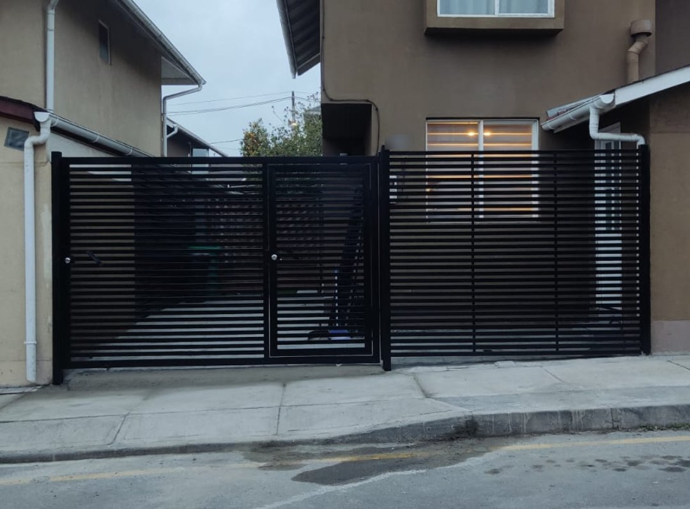
Estructuras metálicas y mixtas · Santiago
Fabricamos e instalamos portones, pérgolas, cobertizos, cierres y mobiliario exterior a medida. Y revisamos los recintos técnicos de edificios y condominios antes de que una falla se vuelva un problema caro.
Portones, pérgolas, cobertizos, cierres, barandas y mobiliario exterior.
Ver servicios → Para administraciones y comitésInspección de salas de bombas, calderas, eléctricas, accesos y espacios comunes, con informe de hallazgos.
Ver los 3 niveles →Servicios
Cada trabajo se diseña y fabrica a medida, en acero o combinando metal con madera y policarbonato.
Portones batientes y de corredera, en metal o metal con madera, con opción de motor y control de acceso.
Estructuras para terrazas, patios y estacionamientos, con techo de madera o policarbonato e iluminación.
Cierres perimetrales, protecciones de ventanas y celosías metálicas que dan seguridad y privacidad.
Barandas para escaleras, balcones y terrazas, fabricadas e instaladas a la medida del lugar.
Bancas y mesas con patas metálicas y cubiertas de madera, hechas a pedido.
Inspección de recintos técnicos y espacios comunes para edificios y condominios, con informe de hallazgos.
Para administraciones y comités
Una falla detectada a tiempo cuesta mucho menos que una reparación de emergencia. Revisamos los recintos técnicos y espacios comunes, y entregamos un informe con fotos, ubicación y prioridad de cada hallazgo, incluidas las fallas que todavía podrían estar cubiertas por garantía.


Mantención y revisión no son lo mismo
Le dice al comité cómo está el edificio y si las mantenciones están funcionando.
Para cada residente
Los gastos comunes se reparten según la prorrata de cada unidad. Cada reparación que se evita o se achica es un ahorro directo para cada departamento.
Detectamos goteo en la empaquetadura. Dos caminos:
Hasta 5 recintos técnicos a elección, con informe.
Ideal para revisar un recinto que preocupa o partir con un primer diagnóstico.
Todos los recintos técnicos y los espacios comunes.
Ideal para preparar el presupuesto anual o una asamblea.
Todo lo anterior más revisión documental.
Ideal para edificios de 2 a 5 años que aún pueden reclamar garantías.
Lo que recibe la administración
Páginas de un informe tipo con datos ilustrativos. Desliza para ver más.
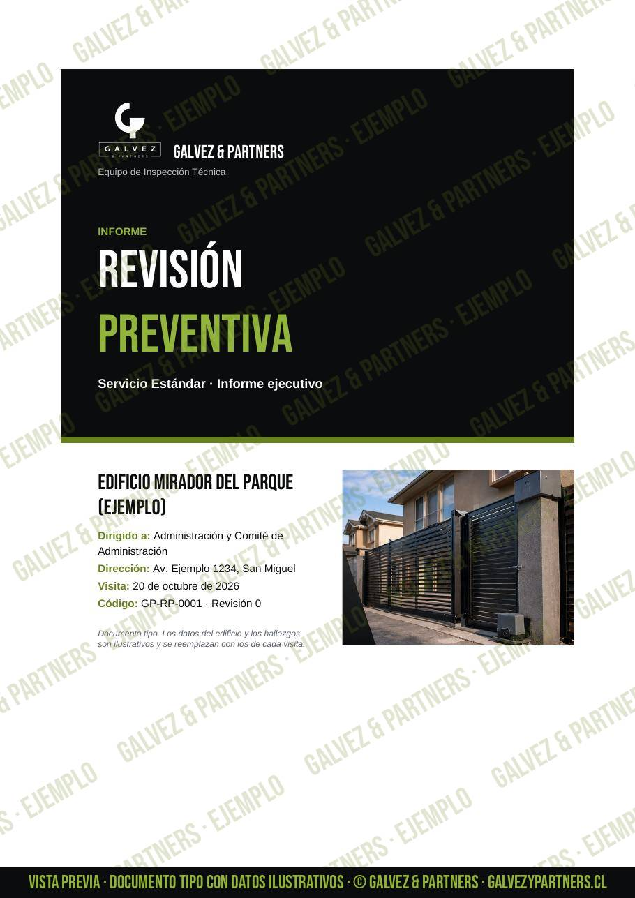
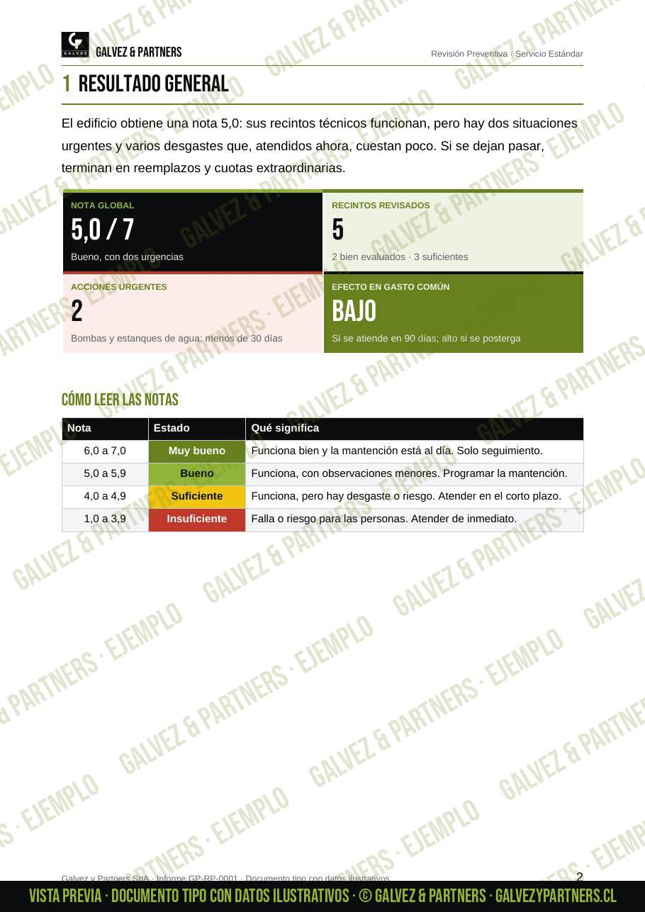

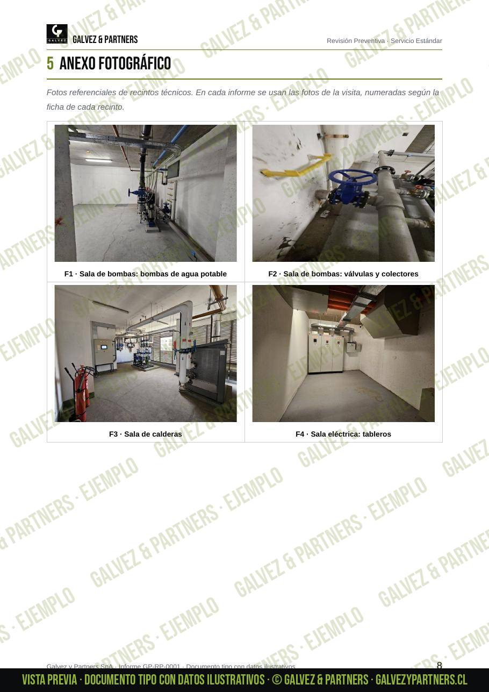
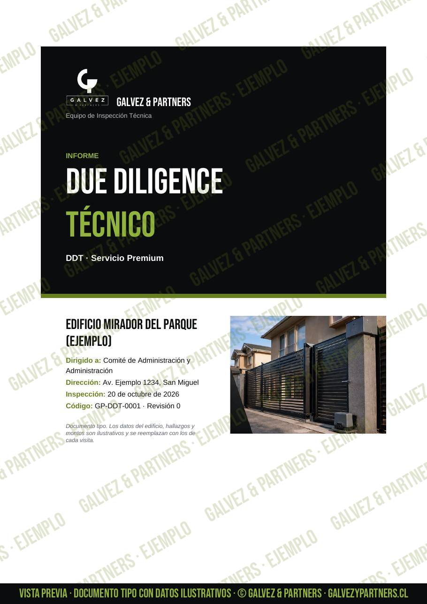
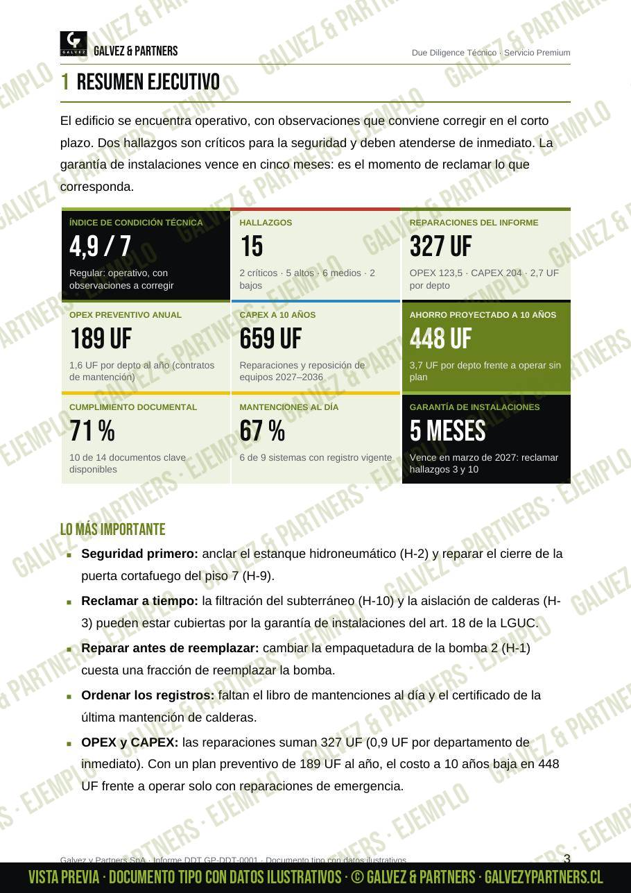
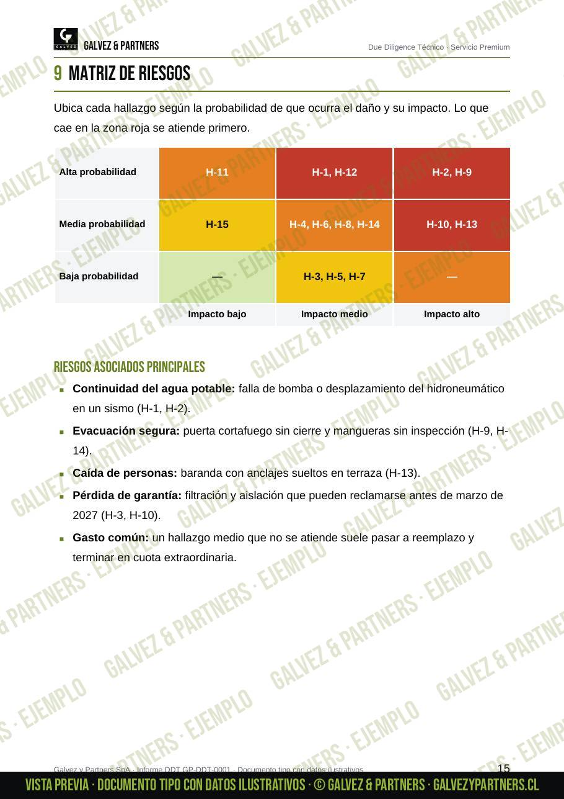
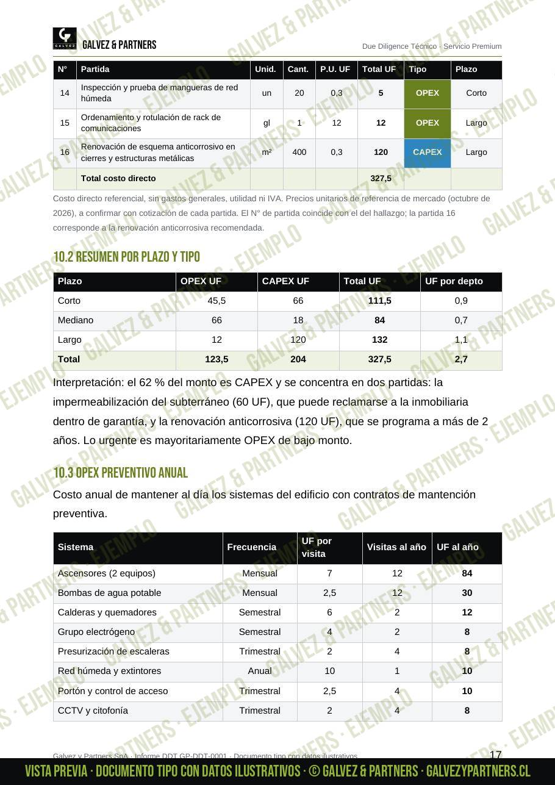
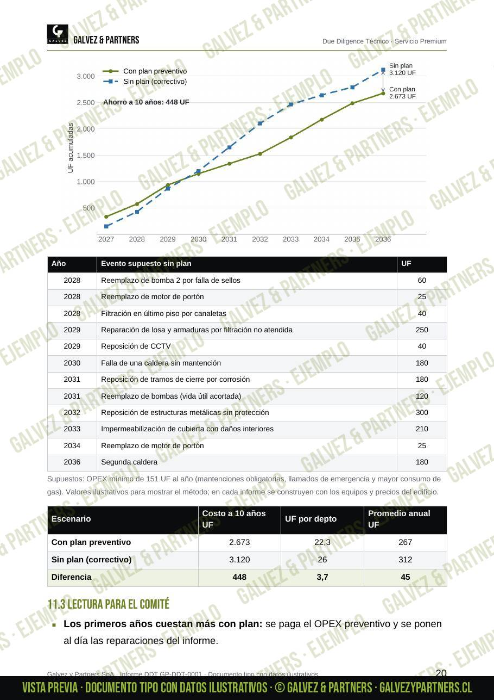
La revisión es una inspección visual y de funcionamiento, con un informe de observaciones; no reemplaza una certificación. Entregamos el informe a la administración, que decide cómo seguir; para gas y electricidad recomendamos un instalador autorizado SEC.
Trabajos realizados
Algunos de los trabajos que hemos fabricado e instalado.


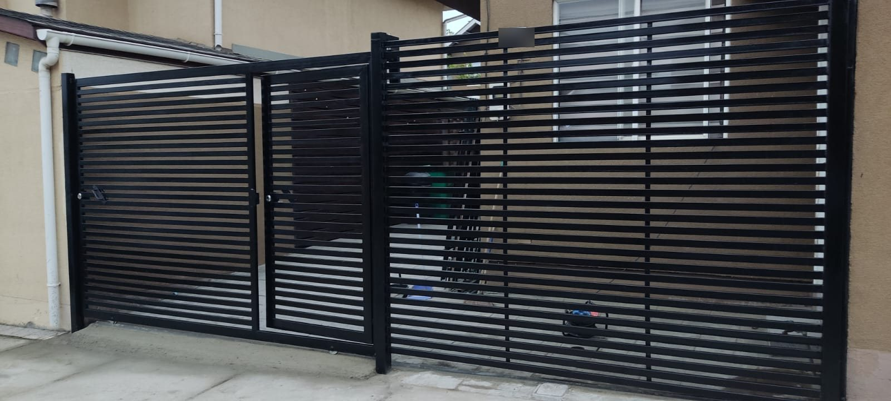
 Antes
Antes Después
DespuésCierre de celosía: reemplazo de una reja con óxido por un cierre de celosía metálica con portón doble.
 Antes
Antes Después
DespuésPortón metálico: reemplazo completo, fabricación e instalación.
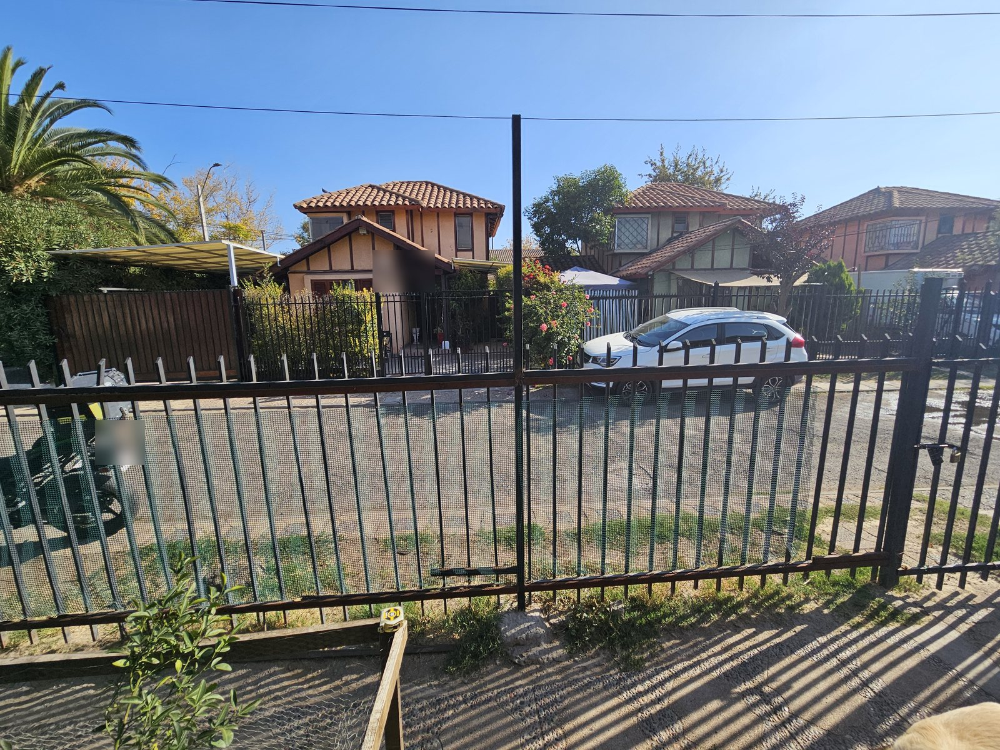
Antes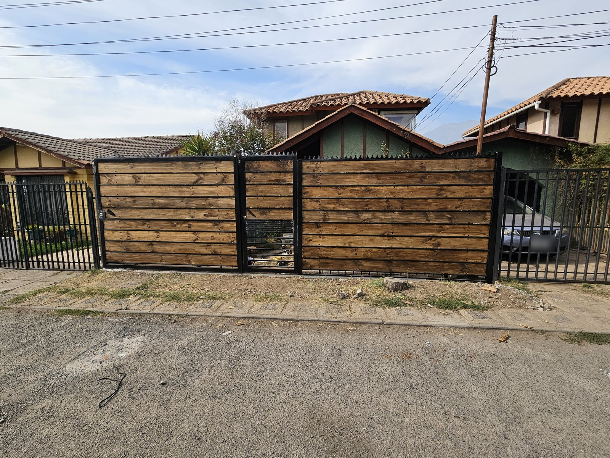
DespuésPortón corredera y cierre · La Florida: estructura metálica con revestimiento de madera, puerta peatonal y remate de seguridad.
Opiniones
Me gustó mucho el resultado, te agradecemos mucho.
Trabajo excelente, muchas gracias.
Buen trabajo y rápido, conveniente en precio. Portón automatizado sin problemas.
Gracias por el trabajo, quedamos encantados con la reja.
¿Te hicimos un trabajo? Cuéntanos cómo te fue: te toma un minuto y nos ayuda a mejorar.
Cuéntanos tu experienciaNuestro sello
Cuando el proyecto lo permite, recuperamos y reutilizamos materiales para darles un nuevo valor. Menos desperdicio, misma resistencia.
Cómo trabajamos
Cuéntanos qué necesitas por WhatsApp y, si puedes, envíanos fotos del lugar.
Vamos a terreno, tomamos medidas y vemos contigo materiales y diseño.
Te enviamos una cotización clara con el detalle del trabajo y los plazos.
Fabricamos a medida e instalamos, y dejamos todo limpio y funcionando.
Contacto
Atendemos en Santiago y la Región Metropolitana. Escríbenos y te respondemos a la brevedad.